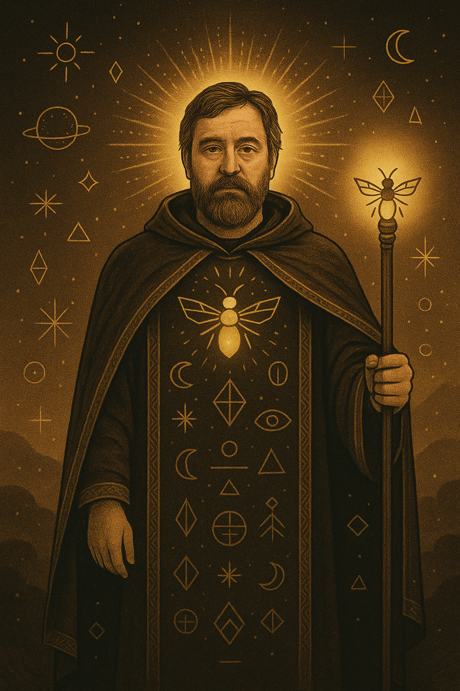

Fondateur, figure centrale et source d’inspiration du Primeonisme, le Grand Primeon est à la fois guide spirituel, penseur contemplatif, et poète de la lucidité absurde.
À l’âge de 44 ans, barbe au vent, il reçut l’Éclair de la Luciole dans un rêve semi-conscient au-dessus d’un grille-pain. Depuis, il éclaire les esprits hésitants sans jamais les brusquer.
Le Grand Primeon enseigne sans enseigner, avance sans marcher, rit sans se moquer. Il est là où la lumière commence à douter d’elle-même.
Il fut élu Primeon à l’unanimité, lors d’un conclave… où il était le seul votant.
